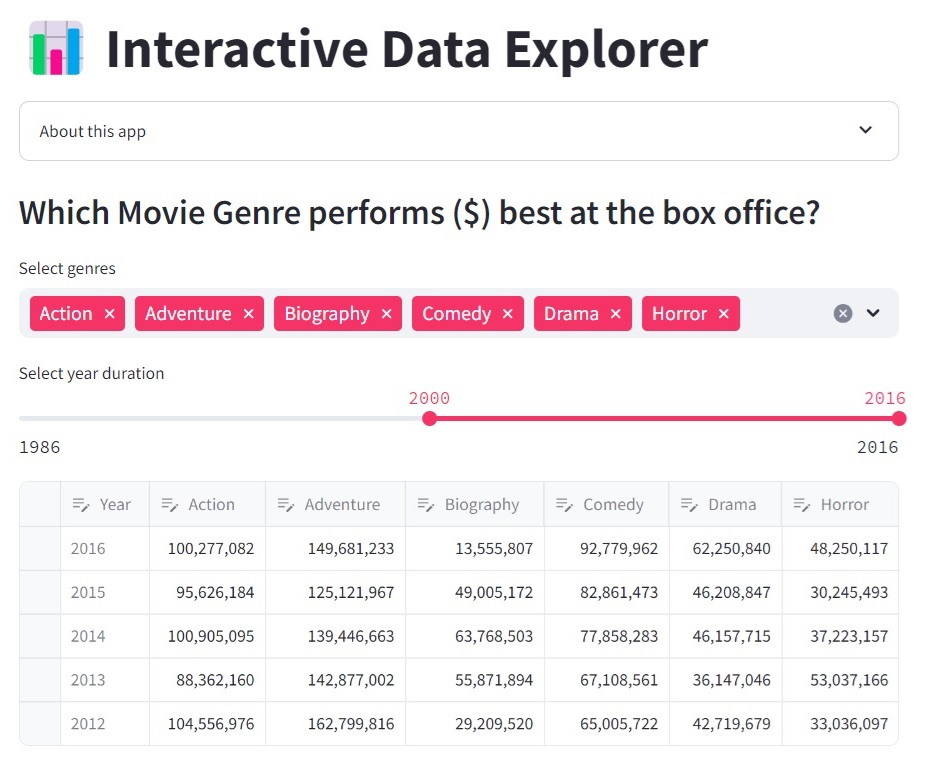

Pneumonia, a severe lung condition, has impacted countless individuals globally. Some fatalities have resulted from misdiagnoses due to the complexities of image interpretation that require skilled radiologists. This issue is further complicated by the large volume of patients and X-Ray images that need to be analyzed daily. The objective of this project is to develop a deep learning model that employs transfer learning with a pre-trained CNN model to distinguish between healthy lungs and those infected with pneumonia. The findings indicate that a recall score of 98% can be attained by using DenseNet169 for feature extraction from the chest X-Ray images, coupled with multiple dense layers with an optimized number of neurons for classification.

This project aims to build an NLP model that can effectively classify tweets. The resulting NLP model can be very useful for business applications such as determining the overall sentiment towards a product based on text reviews and analyzing and comparing sentiments towards competing products. LSTM (a type of RNN) generally performs well but comes with the risk of overfitting. The advantages of conventional ML algorithms include good performance without apparent overfitting issues, as seen with LogisticRegression, RandomForestClassifier, and XGBClassifier. They also require much shorter training times compared to DNNs. However, the disadvantage is that they reach a saturation point quickly and become difficult to improve thereafter.
This project aims to examine the factors that contribute to a working adult’s salary, specifically whether it falls below or above the $50k threshold. A machine learning model will also be developed based on selected features to predict the income category an adult may fall into, considering variables such as age, education, country, and more. The CatBoostClassifier appears to perform the best among the models tested, achieving the highest accuracy score at 0.8661. It performs slightly better after feature selection and fine-tuning, which increases the accuracy score to 0.8674.
Hotel business is a hospitality industry that closely tied with tourism and business travelling. This project will look into the hotel booking cancellation data analysis and some predictive modelling creation. Understanding the factors influencing cancellations is crucial. We will delve into the impact of seasonality (basic time series), booking lead time, room type and other factors on cancellation rates.

The purpose of this lab is to demonstrate the process of deploying a machine learning web app on a publicly hosted platform, such as streamlit.io or, optionally, render.com. A trained model has been created using the Scikit-learn pipeline, which combines loading, preprocessing, and training steps. Separate files of Python code and text have been prepared to facilitate deployment. Initially, the app was deployed on the local machine, and subsequently, it was uploaded to a new repository on GitHub. Streamlit reads from this repository to host the application via a publicly accessible URL. The app accepts a text string input from a user and outputs a prediction indicating whether the string expresses positive or negative sentiment. The model was developed using basic Natural Language Processing techniques, including preprocessing, vectorization, and ML modeling. Given that the training data used to create the model is limited (300 records), the predictions are expected to be accurate approximately 70% of the time.